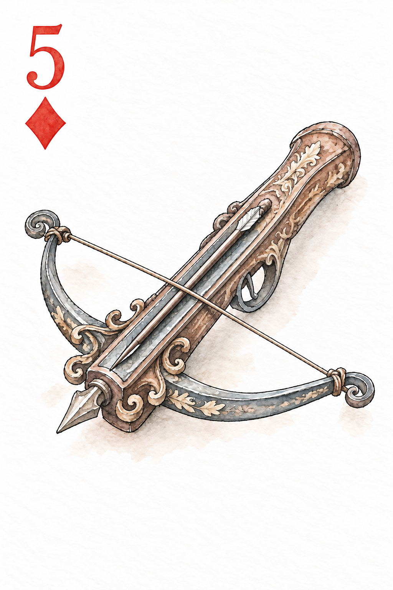
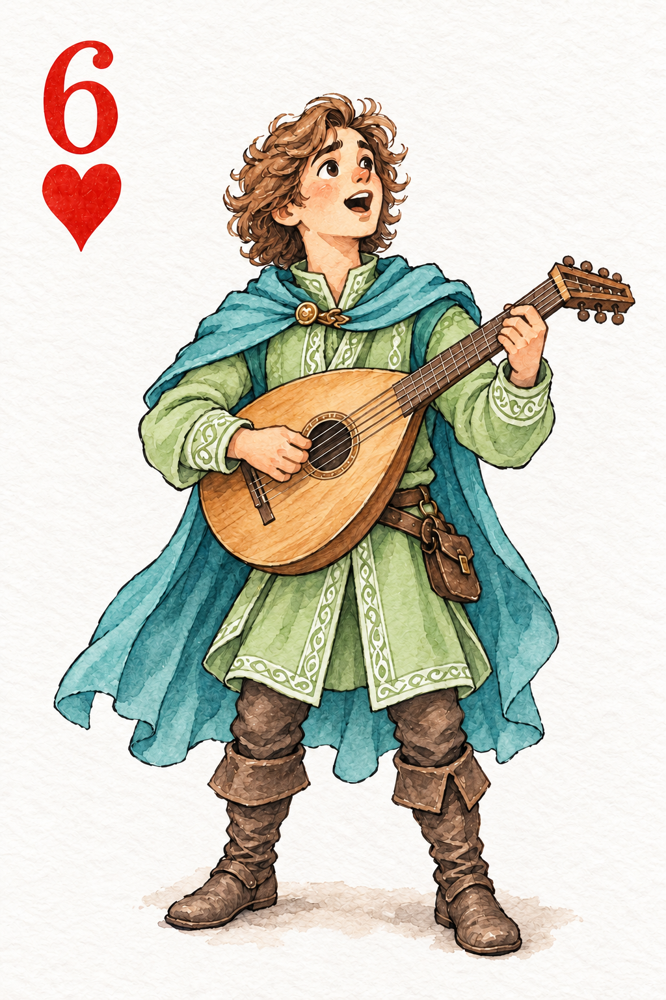
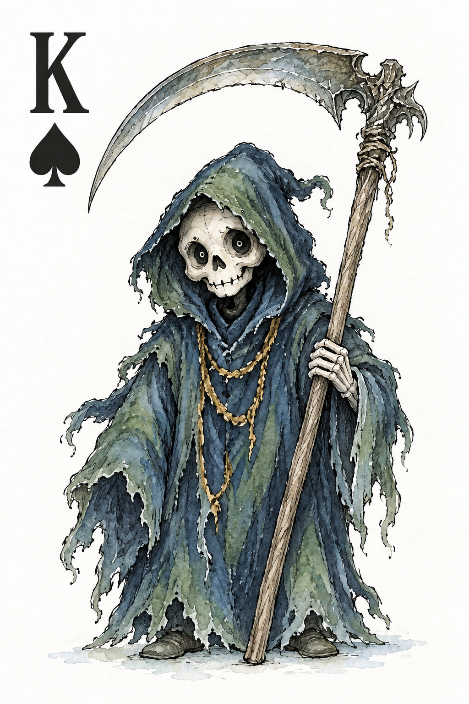

A dungeon in a deck of cards.
Scoundrel
Choose your battles.
Keep your nerve.
Make it out alive.
Room 5 · 14 / 20 healthRun in progress
Starting a new run replaces your current run and records it as a loss.



44 cards. One way through.Monsters · Weapons · Potions